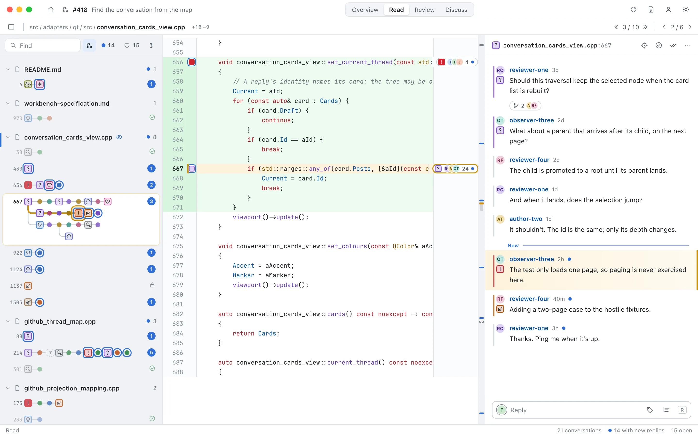
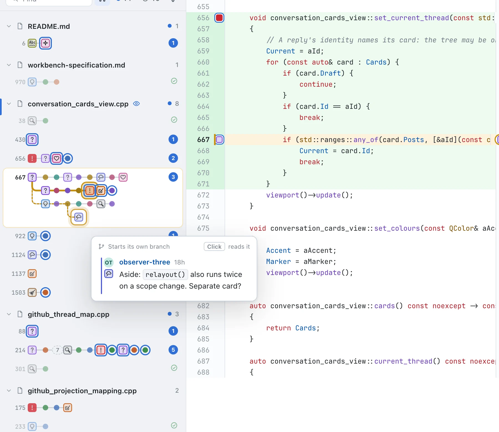
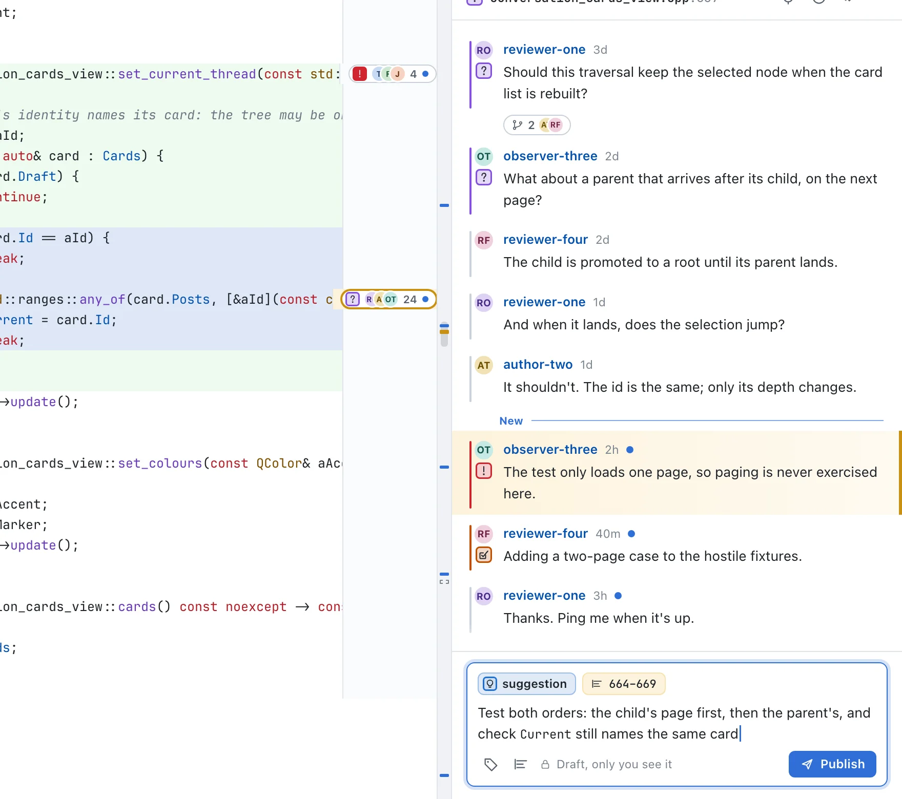
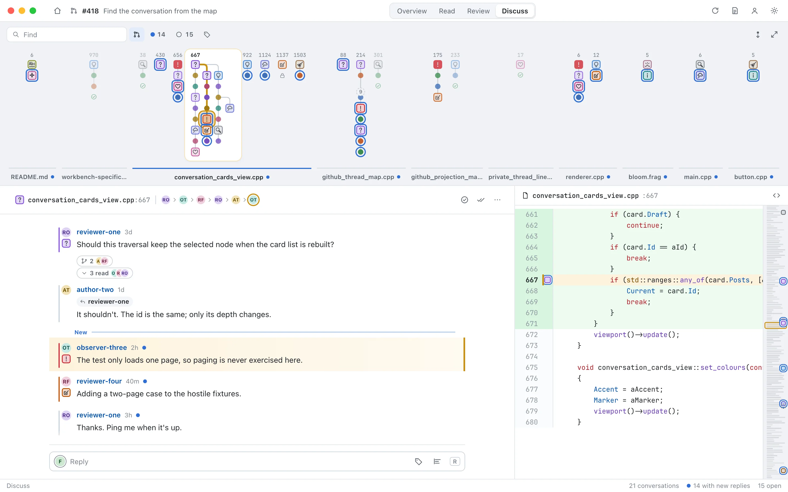
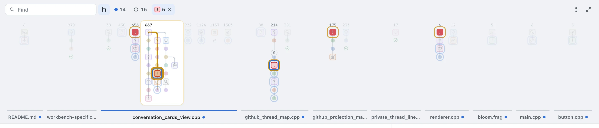
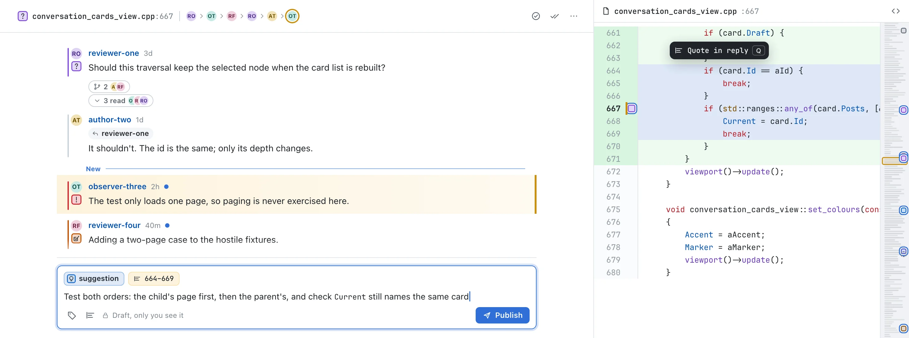
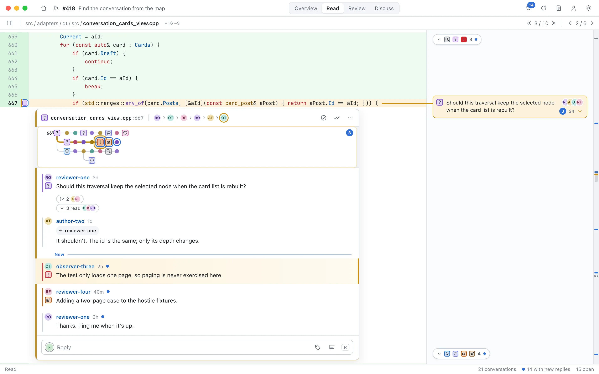
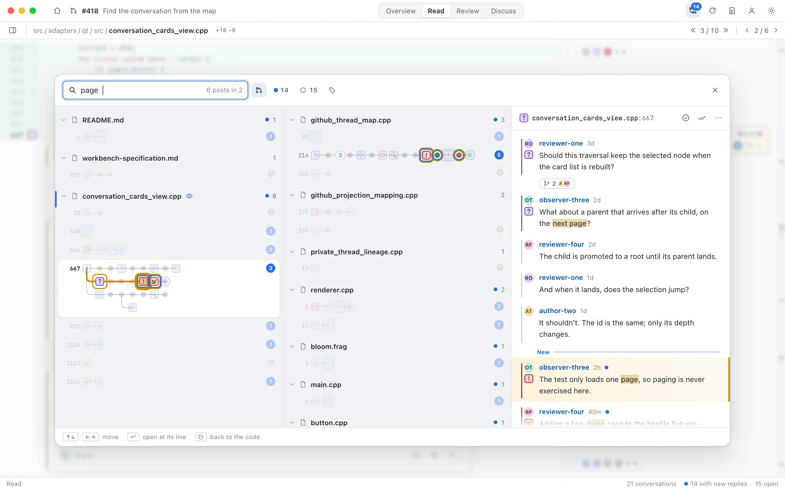
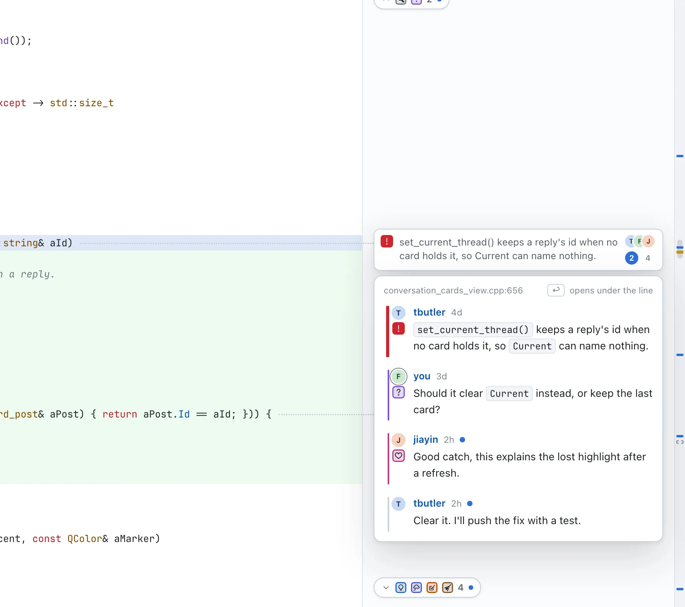

the branch you are reading
new reply
label mark
reply without a label, coloured by person
Label marks and rails are as accepted in BPR-1083; they are not part of this choice.
A
Atlas
The map is a column on the left for finding the conversation; the code stays in the middle and the conversation reads on the right.





B
Desk
The conversation is the workspace: every conversation hangs from its file across the top, you read in the middle, and the code peeks in at the side.





C
Margin
The code is the page: threads sit in its margin at their lines and open right under the line; the map is a finder you call over the window.




